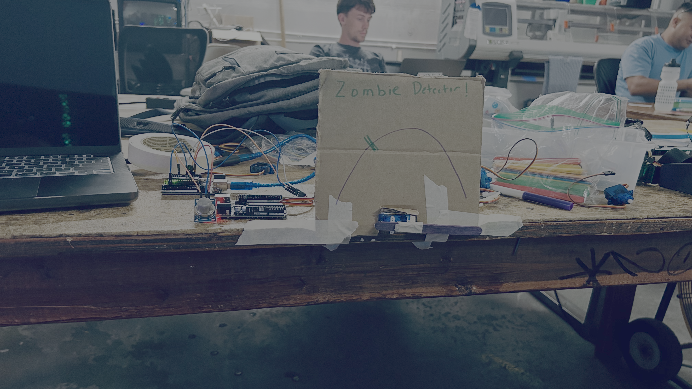
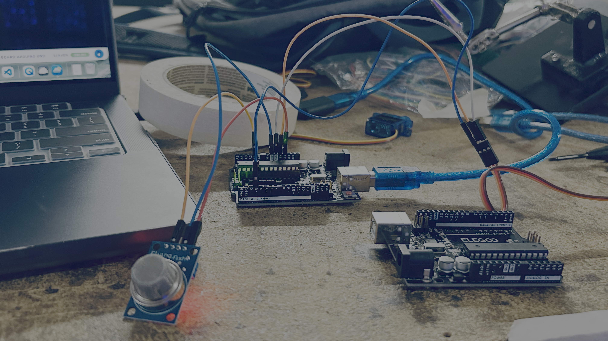
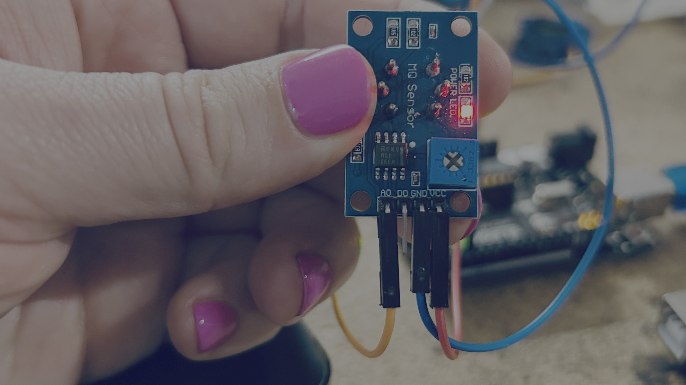

Zombie Detector Gauge
Project
Build a zombie detector using a gas sensor and a servo motor.
The gas sensor measures changes in the air. The Arduino converts the sensor reading into a servo angle, moving the gauge between different danger levels.

Wires

Gas Sensor

| Arduino Pin | Component | Component Pin |
|---|---|---|
| 5V | Gas Sensor | VCC |
| GND | Gas Sensor | GND |
| A1 | Gas Sensor | AO |
Servo Motor
| Arduino Pin | Component | Wire Color |
|---|---|---|
| 5V | Servo | Red |
| GND | Servo | Brown or Black |
| D3 | Servo | Orange, Yellow, or White |
Code
#include <Servo.h>
Servo gauge;
void setup() {
pinMode(A1, INPUT);
Serial.begin(115200);
gauge.attach(3);
}
void loop() {
int readout = analogRead(A1);
Serial.print("READOUT: ");
Serial.println(readout);
int angle = 180 - map(
constrain(readout, 140, 170),
140,
170,
0,
180
);
Serial.print("ANGLE: ");
Serial.println(angle);
gauge.write(angle);
delay(1000);
}
Try Changing the Code
Change the sensor range
constrain(readout, 140, 170)
Try making the numbers bigger or smaller to change how sensitive the detector is.
Change the speed
delay(1000);
Try:
delay(250);
or
delay(100);
to make the gauge update faster.